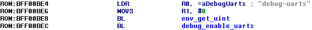

Enabling debug-uarts on DFU-like iBoot
debug-uarts is an iBoot variable which sets the UART mode. If it's set to 3, iBoot Stage 2 (iBEC, flashable iBoot and iBSS before iOS 5) will send its' log over the serial interface, which may be useful for research purposes:{kind=link}
Tap to image for full size
However, DFU-like bootloaders (SecureROM, WTF, LLB and iBSS after iOS 5) don't access NVRAM and as result won’t give you any output over serial, but it’s still possible to enable UART on LLB and iBSS by manually patching. Not possible on SecureROM for obvious reasons, not sure about WTF
How iBoot Stage 2 sets UART mode
The place in the image where it happens is pretty easy to find — just search for the debug-uarts string:
iBEC for n41ap, iBoot-1537.9.55~11
First it loads the debug-uarts variable from NVRAM:
env_get_uint("debug-uarts", 0)
Then it calls this function which sets the UART configuration:debug_enable_uarts(env_get_uint("debug-uarts", 0))
debug_enable_uarts disassembly:
How to set UART mode on iBoot Stage 1
Find the same function (debug_enable_uarts) in your DFU-bootloader by searching the ORRS R0, R2 instruction for example:iBSS for n41ap, iBoot-1537.9.55~11
Follow its' CODE XREF to find the place where this function is called:
...and replace this instruction (LDRB R0, [R4] in this case) with MOVS R0, #3 (03 20 in hex):
Now your DFU bootloader should send its' log over serial:
{kind=link}
Yes, iBSS doesn't talk much
Tap to image for full size
Tap to image for full size
How to get additional debug messages on iBoot Stage 2
As you may notice, in iBoot Stage 2 debug_enable_uarts is called twice. Here:...and here, just like in DFU bootloaders:
This code is responsible for setting the UART mode before NVRAM is initialized. Replace this instruction (LDRB R0, [R4] in this case) with MOVS R0, #3 (03 20 in hex):
iBoot Stage 2 should now send its' log over serial before NVRAM gets initialized:
{kind=link}
iBEC for n78ap, iBoot-1537.9.55~11
Tap to image for full size
Tap to image for full size
Notes
- I only tested this technique on iPhone5,1 and iPod5,1 with iBoot-1537.9.55~11 (iBSS/iBEC). But the same code routines were also found by me in iBoot-1072.61~2, iBoot-2817.60.2~2 and iBoot-3406.60.10~70, so this technique should work on most iOS bootloaders
- Since we're playing with very low-level stuff, it may be potentially dangerous for your hardware, thus I have to say — information given here is given for educational purposes only and I'm not responsible for any damage it may cause. Although I'm 100% sure that nothing bad will happen, I still have to warn you
Credits
- @JonathanSeals — for idea of using this patch for iBoot Stage 2 in order to enable UART before NVRAM initialization and grammar corrections